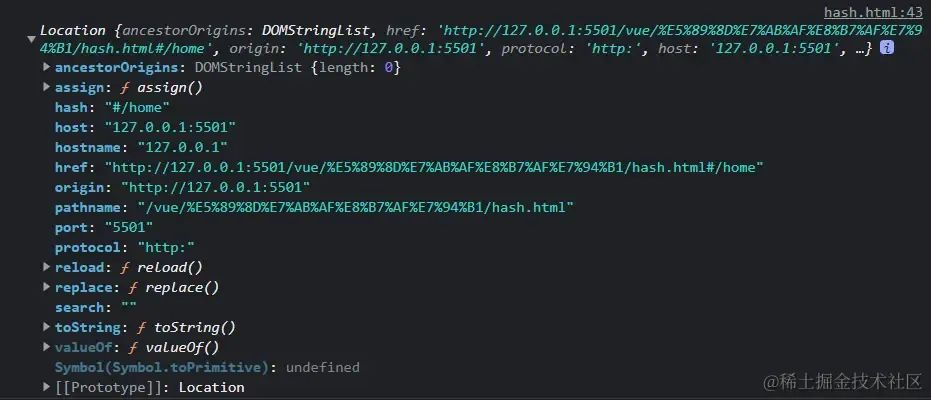
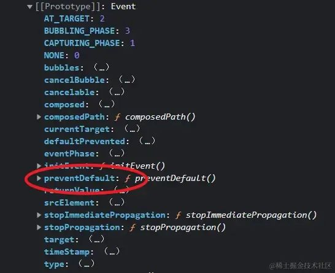

2024-07-10 21:55:25 · YinHao
当谈到前端路由时，指的是在前端应用中管理页面导航和 URL 的机制。前端路由使得单页应用（Single-Page Application，SPA）能够在用户与应用交互时动态地加载不同的视图，而无需每次都重新加载整个页面。
在前端开发中，常用的前端路由库有很多，比如 React Router、Vue Router 和 Angular Router 等。这些库提供了一组 API 和组件，用于定义路由规则、处理导航事件和渲染相应的视图。
简单了解前端路由后，那么前端路由实现的原理是什么呢？
请看今天的分享：
vue-router 是前端路由，但是前端路由不是 vue-router，这是个包含关系
路由一词最早来自服务器，和前端没有关系。当你想要从服务器中读取某个盘的文件，这个文件的路径就是路由。也就是说 「路由是服务器端用来描述路径的，或者是说 url 和文件的映射关系」
后来因为前端的 SPA 单页应用，前端也借鉴了路由这个概念。浏览器的 url 变了需要映射到页面的某个组件，url 变了需要展示某个组件。/home 和 Home.vue，/about 和 About.vue 就是一一映射的关系。「前端借鉴路由的称呼来描述 url 和组件的映射关系」。这个时候你就想起来 router 中 index.js 文件中，一个 path 对应一个 component，也就是一个路径对应一个组件
若是能解决这两个问题就可以实现前端路由了。
哈希是一种值，按照某种规则生成的一串值，用来代表一个唯一的文件，文件名后加一个哈希值，可以看到文件是否被修改过。
在浏览器中也有 hash 这个概念，url 中接一个#，#后的值就是哈希值，按道理 url 变了，页面一定会刷新，但是哈希是个特例，放个哈希值就是不会刷新页面，这样，我们就解决了第一个问题，修改 url 不引起页面的刷新
「在浏览器 url 后加个哈希值，哈希值的变更不会引起浏览器页面的刷新」
下面利用哈希模式实现路由
我们新建一个 hash.html 文件，放两个 a 标签，但是 a 标签有个机制，就是点击必定会引起页面的刷新。但浏览器的机制是哈希值的变更不会引起页面刷新，所以地址放哈希值可以解决这一问题
<ul>
<li><a href="#/home">首页</a></li>
<li><a href="#/about">关于</a></li>
</ul>
<div id="routeView">
<!-- 放一个代码片段 点击首页首页代码片段生效，反之关于生效-->
</div>
现在模拟一个场景，如果点击首页，routeView 容器展示首页的内容，点击关于 routeView 容器展示关于页面的内容，如果能够实现，路由就可以实现了
自行封装一个路由，先写一个路由的映射关系
<script>
const routes = [
{
path: "#/home",
component: "首页内容",
},
{
path: "#/about",
component: "关于页面内容",
},
];
</script>
点击首页，展示首页内容，点击关于，展示关于首页内容。
接下来的事情就是点击 url，我们需要知道 url 的变化。我们不可能给按钮添加一个点击事件，如果项目大起来，按钮很多，每次点击一个按钮都判断一次 url 的变化，会非常的不优雅。
js 自带一个 hashchange 事件，它可以自动监听 hash 值的变更。当我们点击首页的时候，下面的代码都会执行一次，因为 hash 值变了
window.addEventListener("hashchange", () => {
console.log("changed");
});
这样，第二个问题我们已经解决了。非常之简单！
我们现在把监听器的回调函数写出来，拿到当前的哈希值，去对应 component。
window.addEventListener("hashchange", onHashChange);
function onHashChange() {
console.log(location);
}
location 代表 window 窗口的 url，我们运行打印这个 location 看看
看到没有，里面刚好有个 hash 值，我们可以把这个拿出来去对应 component！
这个时候直接去数组中匹配就可以，forEach 遍历
function onHashChange() {
console.log(location);
routes.forEach((item, index) => {
if (item.path === location.hash) {
routeView.innerHTML = item.component;
}
});
}
当然，记得拿到 routeView 的 dom 结构
这样写会有个问题，就是页面刚加载完毕的时候不会去加载当前的路由，想要 hashchange 在页面初次加载的时候触发一次，那就给一个监听 dom 结构的事件，dom 一出来就会执行，也就是说页面加载完毕就调用一次 hashchange
window.addEventListener("DOMContentLoaded", onHashChange);
好了，最终的 hash.html 如下
<body>
<!-- 模拟单页页面应用 -->
<ul>
<li><a href="#/home">首页</a></li>
<li><a href="#/about">关于</a></li>
<!-- 判断url的变化，绑定点击事件不好，页面过多就很累赘，有个hashchange的官方方法 -->
</ul>
<div id="routeView">
<!-- 放一个代码片段 点击首页首页代码片段生效，反之关于生效-->
</div>
<script>
const routes = [
{
path: "#/home",
component: "首 容",
},
{
path: "#/about",
component: "关于页面内容",
},
];
const routeView = document.getElementById("routeView");
window.addEventListener("DOMContentLoaded", onHashChange); // 与vue的声明周期一个道理，dom一加载完毕就触发
window.addEventListener("hashchange", onHashChange);
function onHashChange() {
console.log(location); // url详情，里面就有个hash值 liveserver可以帮你把html跑成服务器
routes.forEach((item, index) => {
if (item.path === location.hash) {
routeView.innerHTML = item.component;
}
});
}
</script>
</body>
其实这就是 vue-router 中两种模式之一哈希模式，哈希模式就是这样是实现的。
a 标签
浏览器前进后退
window.location
以上方式导致 url 变更都会触发 hashchange 事件。
那问题来了，history 模式没有哈希是如何实现的呢？没有哈希值 a 标签一定会引起页面的刷新，如何解决？我们继续看下去
history 用得更多，二者没有本质区别，仅仅是因为哈希模式的 url 多了个#很丑，所以用的少
我们先看下 history 在 mdn 中的介绍
History - Web API 接口参考: https://developer.mozilla.org/zh-CN/docs/Web/API/History
文档中介绍：history 接口允许操作浏览器的曾经在标签页或者框架里访问的会话历史记录
我们重点看一个 history 自带的方法 pushState
它可以修改 url 且不引起页面的刷新
浏览器中有个会话历史栈，它可以维护你的访问路径，有了这个你返回就可以按照栈的顺序进行前进回退。
pushState 提到了 popState，他是靠 popState 监听 url 的改变的，并且仅当浏览器前进后退时生效
既然如此，我们现在开始手搓
同样是上面的情景，两个 a 标签，一个首页，一个关于页面。
<ul>
<li><a href="/home">首页</a></li>
<li><a href="/about">关于</a></li>
</ul>
<div id="routeView"></div>
给个 url 和组件的对应关系数组，已经不用哈希了
<script>
const routes = [
{
path: "/home",
component: "首页内容",
},
{
path: "/about",
component: "<h1>关于页面内容</h1>",
},
];
</script>
a 标签有个默认的页面跳转效果，既然现在不用哈希，我们就需要自己把 a 标签的页面跳转刷新效果干掉
先拿到所有的 a 标签
const links = document.querySelectorAll("li a");
再去禁用掉默认的跳转行为，它跳转一定会带来刷新，要干掉它
links.forEach((a) => {
a.addEventListener("click", (e) => {
console.log(e);
e.preventDefault(); // 阻止a的跳转行为
});
});
我们可以打印看看这个事件参数，顺着原型链找到 event 对象，里面有个 preventDefault，这个就是禁用 a 标签默认的跳转行为
接下来添加一个可以修改 url 又不引起页面刷新的方法，就是 pushState，具体用法查看 mdn
他有三个参数，第一个参数是 JavaScript 对象，一般不需要，给个 null 就好，第二个参数由于历史原因，写个空字符，不写会有问题，第三个参数是新的 url
新的 url 肯定是点了什么放什么 url，所以我需要读取到 a 标签的 href 值
a.getAttribute("href");
以上方法是核心，这里已经实现了哈希一样的效果，并且没有难看的 #，pushState 的核心原理就是它会往浏览器的历史栈中塞一个值进去，让浏览器显示新的值，并且不引起页面的刷新
接下来就是要去感知到 url 的变化，去一一对应组件的展示
我们写一个函数，来实现这个功能。还是一样的，先拿到当前的浏览器地址
location.pathname;
然后再进行遍历，去添加组件
routes.forEach((item) => {
if (item.path === location.pathname) {
routeView.innerHTML = item.component;
}
});
同样的，我们需要在页面初次加载的时候调用函数
但是浏览器的前进后退没有触发上面的遍历函数，popState 刚好填补这个空缺
window.addEventListener("popState", onPopState);
好了，最终的 history.html 如下
<body>
<ul>
<li><a href="/home">首页</a></li>
<li><a href="/about">关于</a></li>
</ul>
<div id="routeView"></div>
<script>
const routes = [
{
path: "/home",
component: "首页内容",
},
{
path: "/about",
component: "<h1>关于页面内容</h1>",
},
];
const routeView = document.getElementById("routeView");
window.addEventListener("DOMContentLoaded", onLoad);
window.addEventListener("popstate", onPopState);
function onLoad() {
const links = document.querySelectorAll("li a"); // 获取所有的li下的a标签
// console.log(links)
links.forEach((a) => {
// 禁用a标签的默认跳转行为
a.addEventListener("click", (e) => {
console.log(e);
e.preventDefault(); // 阻止a的跳转行为
history.pushState(null, "", a.getAttribute("href")); // 核心方法 a.getAttribute('href')获取a标签下的href属性
// 映射对应的dom
onPopState();
});
});
}
function onPopState() {
console.log(location.pathname);
routes.forEach((item) => {
if (item.path === location.pathname) {
routeView.innerHTML = item.component;
}
});
}
</script>
</body>